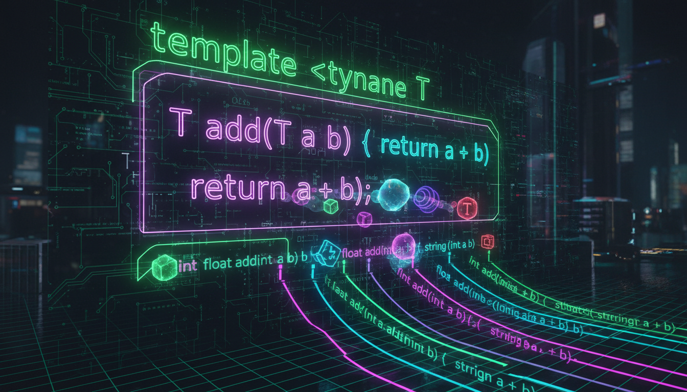

template, typename, узагальнене програмування

Шаблони дозволяють створювати узагальнені функції, що працюють з будь-якими типами даних.
#include <iostream>
#include <string>
// Шаблон функції
template <typename T>
T max(T a, T b) {
return (a > b) ? a : b;
}
// Шаблон з двома параметрами
template <typename T, typename U>
auto multiply(T a, U b) -> decltype(a * b) {
return a * b;
}
// Шаблон функції сортування
template <typename T>
void swap(T& a, T& b) {
T temp = a;
a = b;
b = temp;
}
int main() {
// Автоматичне визначення типу
std::cout << max(5, 3) << std::endl; // int
std::cout << max(3.14, 2.71) << std::endl; // double
std::cout << max("apple", "banana") << std::endl; // const char*
// Явне вказівка типу
std::cout << max<double>(5, 3.14) << std::endl;
// Шаблон з двома параметрами
auto result = multiply(5, 3.14);
std::cout << "5 * 3.14 = " << result << std::endl;
// swap
int x = 10, y = 20;
swap(x, y);
std::cout << "x=" << x << ", y=" << y << std::endl;
return 0;
}